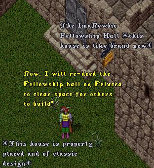
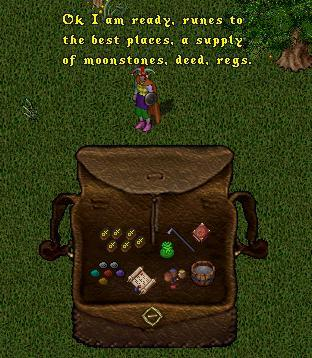
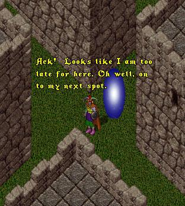
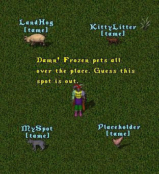
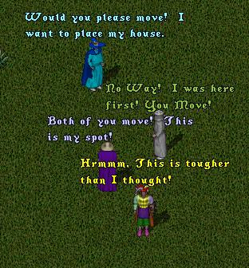
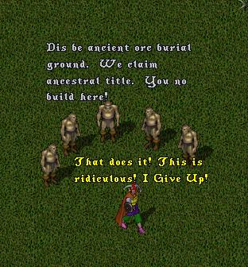
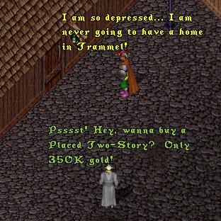
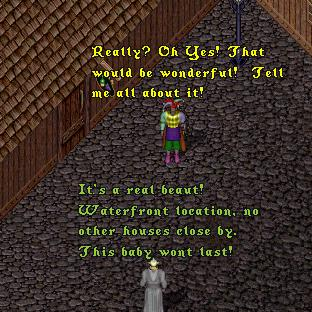
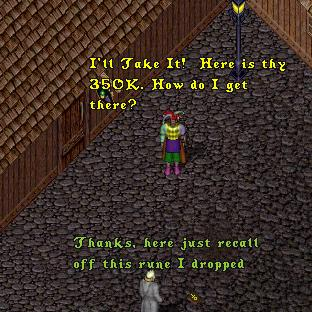
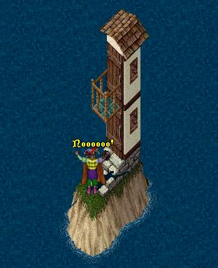

As this episode opens, ImaNewbie is
preparing to head out to the no-PvP
lands of Trammel to place his new dream
home. Being a considerate person, he
first re-deeds the famed Fellowship
Hall, feeling that it is only fair to free
up space for those who need a space in
Felucca to place their home.
 |
 |
After carefully checking his backpack,
ImaNewbie drops a moonstone and gates to the
first spot he has picked out in the new lands.
 |
Oh oh! already taken. Oh well, ImaNewbie
has several more spots picked out and
heads on over to his second choice.
 |
Hrmm, this doth not bode well! Undaunted,
ImaNewbie moves on to his third choice.
 |
Yikes! Surely his next spot will
be free of problems?
 |
Discouraged and disgusted, ImaNewbie gives
up and heads to the Tavern to drown his
sorrows. Just outside the tavern, he is
approached by a stranger who appears to
have a solution to his problem.
 |
 |
 |
Hardly able to contain his excitement,
ImaNewbie utters the immortal words,
"Kal Ort Por", and is whisked off to
his new Dream Home!
 |